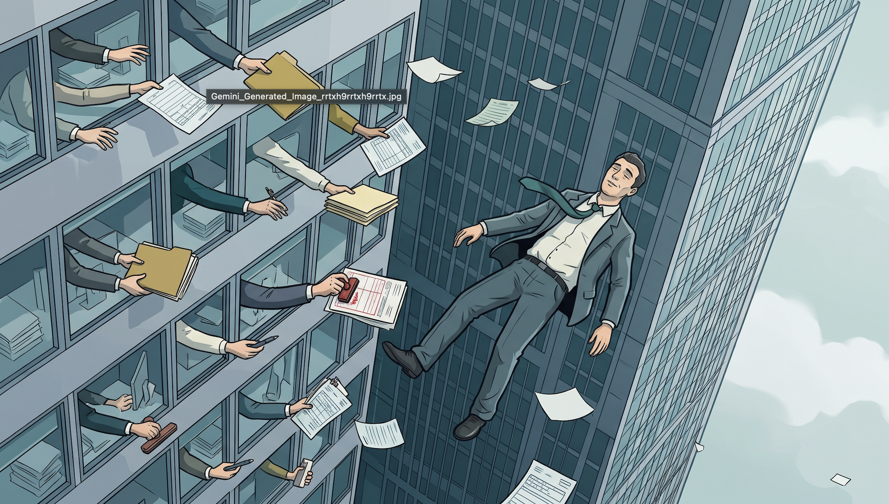

Em queda livre

No rebordo daquele pequeno muro, observo o horizonte. Não é retilíneo como quando contemplamos o mar num final de tarde e o sol se esconde para lá do limite da curvatura da terra, dourado, queimado, cansado. Este horizonte é recortado por prédios e um fumo denso de poluição. De sons que se misturam num ruído único como se fosse um ar condicionado num escritório qualquer do mundo corporativo, onde já só damos por ele quando o desligam, dando lugar à paz daquele novo silêncio que nos anuncia que estamos para lá da hora e ainda assim permanecemos, com aquele ar condicionado que recicla um ar doentio disfarçado de refresco para a pele, secando-nos a respiração numa estranha metáfora implacável da secura da nossa própria identidade.
É um recorte frio.
É um horizonte plastificado, cimentado por ilusões com décadas de promessas de riqueza e progresso.
É um recorte inanimado, de movimentos de marionetas.
Olho para baixo e vejo o movimento corrido de pessoas pequeninas alucinadas pela fome daquilo que nunca terão como se observasse formigas a colher reservas para um inverno permanente na esperança de uma primavera que não passa de uma falácia social.
Permito-me rir, porque não sei chorar.
Deixo-me ir.
Entrego-me à leveza da gravidade.
Abandono a prisão daquele pequeno muro.
Passo pelo ar como um falcão na direção da sua presa. Mas não na mesma determinação. Não na mesma pressa. Passo pelo ar como a água passa desde a sua nascente até ao mar. Não a vi nascer. Não a vejo desaguar. Apenas testemunho a sua passagem. E talvez alguém testemunhe também a minha passagem. Alguém que não me viu nascer. Alguém que não me vai ver esborrachar-me num cimento qualquer. Testemunham apenas a minha passagem, talvez, se tiver essa sorte, com a mesma indiferença com que olhamos cada gota de água de um rio que passa.
É só um rio igual aos outros.
Foi só algo que passou.
Há mais de onde veio.
Há muito mais para onde vai.
Sinto-me leve.
As mãos passeiam-se livremente. As pernas esticam-se sem tensão. O corpo ondula naturalmente, numa lenta dança pelo ar que passa por mim como as margens de um rio.
Eu sou o rio.
Um rio poluído por décadas de promessas de riqueza e progresso.
Não sinto o peso do corpo. Não sinto o peso da carne nos ossos massacrados por uma vida de tensão e esforço para coisa nenhuma.
Fecho os olhos.
Solto a mente.
Desfruto das sensações.
Não há muro.
Não há horizonte.
Não há chão.
Não há corpo.
Voo em queda livre. Passo em queda livre.
Como um rio.
Sigo, livre.
O tempo já não é tempo. Os relógios de ponto, os prazos, as promessas ficaram lá atrás, nas margens. Resta um sopro. Uma vontade sem nome, leve como o ar que me atravessa.
Abro os olhos.
Sorrio.
Contemplo.
Observo o espaço à minha volta. Observo a claridade e as cores. Aspiro os seus aromas. Sinto-lhes as texturas.
Leves.
Suaves.
Vejo o décimo quarto andar.
À sua janela, um homem de mangas de alpaca levanta a cabeça de um processo e olha para mim com a irritação de quem foi interrompido.
— Tem requerimento?
Não percebo a pergunta. Só a percebo quando já estou a passar o décimo primeiro andar.
No décimo andar, uma senhora estica o braço pela janela e cola-me um papel no peito. Diz «Queda — Pedido de Autorização», em letra de máquina de escrever antiga, das que usavam fita borrada a tinta e a tecla “r” já se encontrava descentrada da linha de escrita. É uma notificação em triplicado com papel químico. Não tenho caneta para assinar a receção. Ninguém cai com caneta.
No oitavo andar informam-me de que a primeira via fica no serviço, a segunda segue para o arquivo e a terceira é minha, para efeitos de prova.
— Prova de quê? — pergunto.
— De que caiu — responde o funcionário. E carimba.
O carimbo atrasa-me. Pesa-me. Sinto-o. Cada carimbo custa um pouco mais do que o ar.
No sétimo andar já caio devagar, quase de pé, como quem desce uma escada que não existe. Explicam-me que a queda livre foi descontinuada há muitos anos, por falta de enquadramento legal, e que o que estou a fazer é, tecnicamente, uma deslocação vertical não programada.
— Irreverente, diz uma jovem funcionária de tatuagem no braço com rosas entrelaçadas e um piercing no nariz.
O chefe do departamento, de bigode penteado em cornucopia, levanta os olhos por cima dos seus pequenos óculos redondos de tartaruga na minha direção, enrugando com elevação simétrica das asas nasais e do sulco labial.
— Delinquente — corrige, entre dentes.
— Está sujeita a taxa — acrescenta alguém, de dentro sem levantar a cabeça.
No primeiro andar já não caio. Pouso.
O chão não é de cimento. É de linóleo. Há cadeiras de plástico presas umas às outras e um ecrã vermelho que muda de número com um apito.
Na mão, a terceira via. Presa a ela, uma senha: B-71529.
No ecrã: B-08014.
À minha volta estão as formigas de há pouco, também de senha na mão, também com o cabelo ainda despenteado pelo vento. Ninguém fala da queda. Ninguém pergunta de onde caímos. Há muito mais de onde viemos.
Por cima de nós, o ar condicionado a zumbir, a reciclar o mesmo ar doentio disfarçado de refresco. Parece silêncio. Não é. Mas só daremos por isso quando o desligarem.
Eu agora sei.
Sento-me.
Espero.
De vez em quando o ecrã apita, alguém se levanta, entrega a terceira via ao balcão e sai por uma porta que dá para umas escadas.
As escadas sobem.
Ainda não sei até onde.
Quando chamarem o meu número, pergunto.
← Voltar a Livros & Ensaios